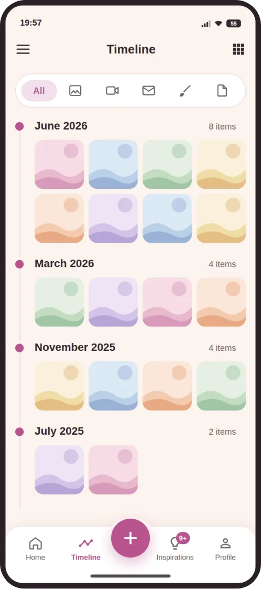

Linha do tempo
Mês a mês, do primeiro dia em diante
Fotos e vídeos entram organizados pela idade da criança, numa linha do tempo que você percorre como um álbum. O aplicativo cria as pastas no Drive sozinho: "0-1 mês", "1 ano"…
- Vários arquivos de uma vez, com descrição em cada um
- Vídeos comprimidos para não lotar o Drive
- "Há 1 ano": lembranças que voltam no dia certo
